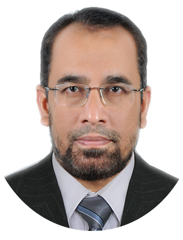

|  | <
Zakir KaldaneFounder and CEO of Smartplus Constulting FZC Dynamic result-oriented Management Professional with expertise in Finance, Marketing and Operations. Having 27 years of experienced in handling a wide range of business operations and consistently producing top-quality work. Capable of leading high-performance teams and of successfully increasing efficiency and productivity whilst reducing costs and inefficiencies. Ability to keep a level head at all times, nurture and grow a business, evaluate opportunities and risks and deliver innovative new solutions to challenges. Possessing excellent client facing and configuration skills and highly successful in helping define company direction, achieving goals and optimizing business. |